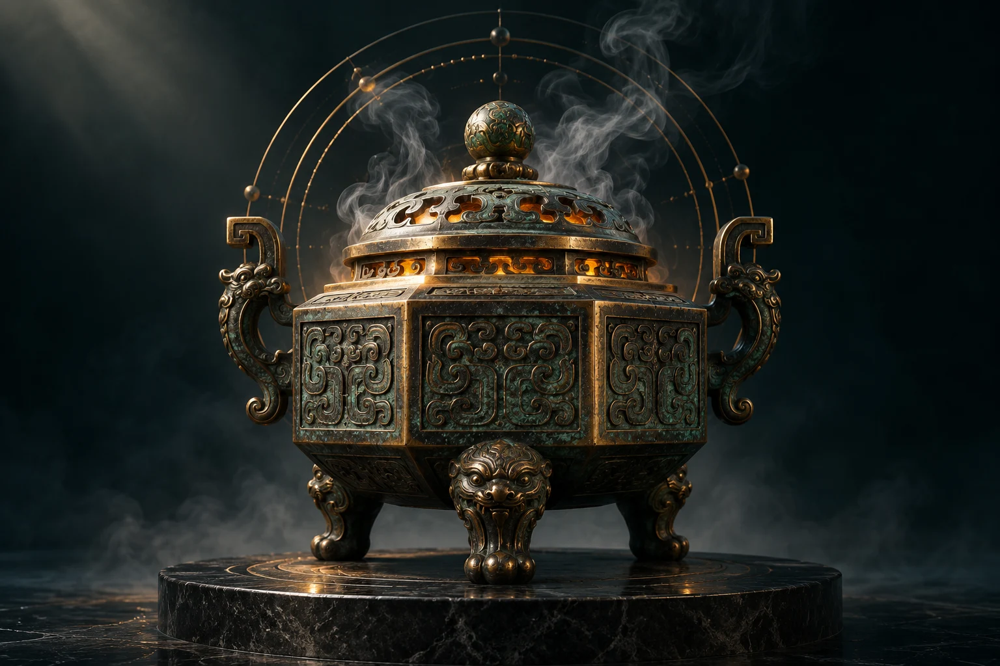

THE BOOK OF CHANGES / 东方探索室
易象观观变，亦观己。
让一念落定，让六爻成象。
沿着古老的文字，重新看见眼前的处境。
一阴一阳 · 生生不息
壹 / 静心 · 成象00 / 06

易—
象—
观—
五十之数，取一不用。
先留下所问，再开始一卦。
由下而上 · 金色为动爻 · 炉景为艺术演绎
01 / 问有所指
此刻，你在意什么？
把一个具体问题留在心里。卦象提供观察的角度，决定仍由你作出。
三钱法数字模拟：每枚等概率取 2 或 3。四种爻值概率为 1/8、3/8、3/8、1/8。
从初爻到上爻填写：6 老阴、7 少阳、8 少阴、9 老阳。
本次取辞朱熹变占通行整理 · 三爻并读版读法与版本说明 ↗
传统文化探索。原典、本站解读分开呈现，不承诺预测效果。此处不收集出生信息。
贰 / 观象 · 玩辞
原文有据 · 释义有别为何读这些文字取辞规则 ↗
本站白话释义 · 非古籍引文
完整经文：卦辞、六爻与大象
六爻记录与蓍草过程
进阶观象：互卦、错卦、综卦
这里提供结构比较，不将三个辅助卦合并成另一套吉凶结论。
读辞小注：常见字词
叁 / 六十四种观察的角度
翻一页，见一象。
自由浏览经文与卦义，不影响正在进行的起卦。
没有找到这卦，请换一个卦名或序号。
肆 / 留给未来的自己
我的卦记
只存放在当前浏览器，最多 30 条。清除浏览器数据会一并移除，不会同步到站主。